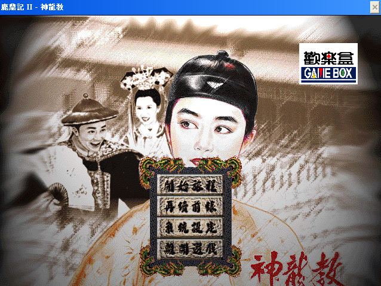
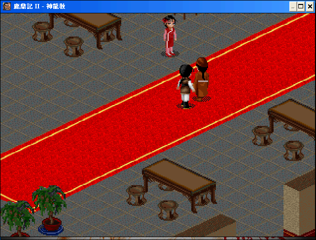
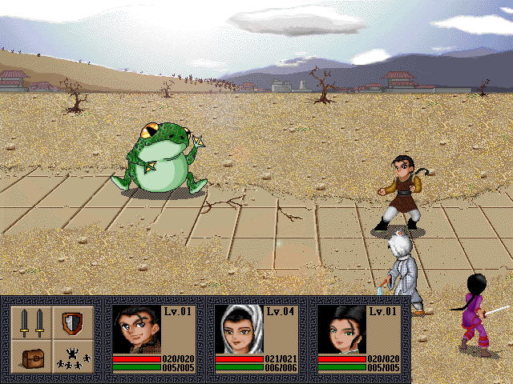

名稱：鹿鼎記2：神龍教 (中文版)
簡介：歡樂盒1998年出品的角色扮演遊戲，以3D斜角畫面呈現，團隊回合制戰鬥。劇情改編
自周星馳同名電影，因此遊戲中大量使用該電影的影片片段 [待補]。



保護：光碟
備註：本遊戲有1998年的繁中安裝版，與1999年的簡中安裝版兩種，安裝內容均相同。
備註：繁中安裝版在XP以上系統安裝時，需設定SETUP.EXE為Win9x相容，安裝過程若有出現
錯誤，略過即可。
檔案：SanLongPatch.rar = 更新檔